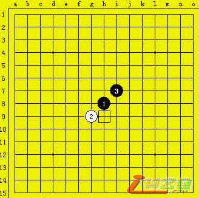
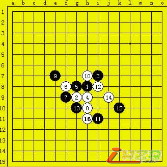
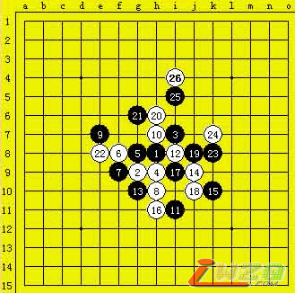
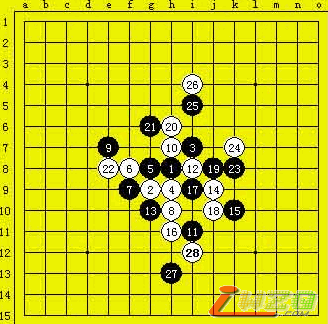
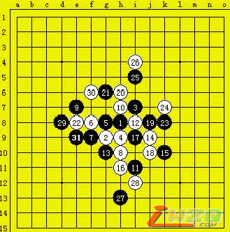
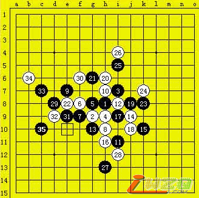
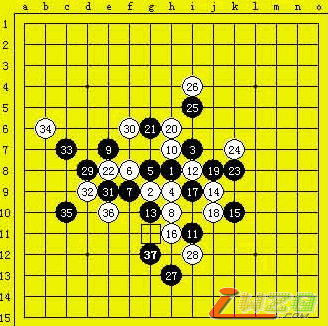

第五届上海连珠名人赛复赛上半区山口釉水九段VS仇云飞五段
#1 第五届上海连珠名人赛复赛上半区山口釉水九段VS仇云飞五段 作者：有志青年 发表时间：2007-5-3 15:50:47
原文地址：http://www.shwzq.com/online/ShowArticle.asp?ArticleID=1303
(13:47) 评论员 许斌 说：大家好!
(13:47) 评论员 许斌 说：今天我们着重直播一场复赛上半区山口釉水九段VS仇云飞五段的比赛

(13:48) 评论员 许斌 说：首先介绍一下各区对阵情况
(13:50) 评论员 许斌 说：经过今天早上的一场快棋加赛,最终俞满江战胜吴昊,因此上半区排序如下
(13:52) 评论员 许斌 说：1-6分别是曹东,俞满江,葛凌峰,仇云飞,吴昊,山口釉水
(13:54) 评论员 许斌 说：经过猜先,仇云飞开局,斜月,山口提出交换
(13:58) 评论员 许斌 说：上半区其他2台对阵为:曹东六段VS俞满江五段,葛凌峰六段VS吴昊六段
(14:00) 评论员 许斌 说：葛凌峰疏星执黑对吴昊六段
(14:02) 评论员 许斌 说：俞满江丘月执黑对曹东
(14:04) 评论员 许斌 说：由于半区里分组赛的对手分带入半区,因此现在曹东已经积1分,山口0分,其他4位棋手都是0.5分
(14:06) 评论员 许斌 说：山口实战没有选择斜月常见的I9打点,选择了实战的G8

(14:07) 评论员 许斌 说：由于一些连珠软件的诞生,近几年连珠理论的发展非常快.很多变化因此被迅速"终结"
(14:10) 评论员 许斌 说：山口选择3打的原因也是因为3打为止的局面相对比较大,留给棋手发挥的余地较大
(14:14) 评论员 许斌 说：看来山口不想和棋
(14:18) 评论员 许斌 说：仇云飞身为北京年轻一代棋手中的领军人物,近年来进步神速.山口要拿下这局绝非易事
(14:19) 评论员 许斌 说：现在第三届名人陈文夏五段来到现场.请他为我们说两句.
(14:21) 评论员 许斌 说：插播:现在有一场对局已经结束,葛凌峰七段力克吴昊六段
(14:22) 评论员 许斌 说：陈文夏五段正在场外为葛帅复盘.似乎那局是中了研究

(14:24) 评论员 许斌 说：山口走的很稳健
(14:28) 评论员 许斌 说：在另外间直播室为大家直播的是矶部泰山九段VS张轶峰二段的对局
(14:30) 评论员 许斌 说：复赛下半区对阵情况为:矶部泰山九段VS张轶峰二段,朱建峰六段VS戈翀宇六段,刚部宽七段VS三森政男九段
(14:31) 评论员 许斌 说：刚部宽七段VS三森政男九段的对局已经率先结束,刚部宽溪月黑棋战胜三森九段
(14:34) 评论员 许斌 说：双方的交换比较平稳,山口面对仇云飞稳健的防守陷入长考中

(14:40) 评论员 许斌 说：上半区另外一场对局曹东六段和俞满江五段都在抱头长考
(14:42) 评论员 许斌 说：俞满江五段扔出了一手很飘逸的棋,曹东六段已经长考很久了,不过这位帅哥棋手向来是以长考出名的
(14:45) 评论员 许斌 说：俞满江五段防守非常出色,棋谱知识在上海是数一数二的,擅长研究,曹东想过这一关也非易事
(14:48) 评论员 许斌 说：回到仇云飞与山口的比赛现场。现在黑棋左边有优势
(14:50) 评论员 许斌 说：这对仇云飞现在是个考验,昨天仇云飞对矶部的比赛中面对窘境,长考走出了一手唯一防,从而最终战胜对手

(14:53) 评论员 许斌 说：随着中国棋手近年来迅速的进步,国外的顶级棋手已经不再会小看中国连珠
(14:55) 评论员 许斌 说：前年矶部九段对局当时还是三段的陈文夏,开局前特地看了下陈文夏的段位,然后开出了弱开局-银月
(14:56) 评论员 许斌 说：结果被陈文夏非常漂亮的秒杀,赛后矶部不得不承认中国的低段棋手已经具有了日本高段的实力
(15:03) 评论员 许斌 说：双方交换了几手,形势对白棋不利,仇云飞频频陷入长考中

(15:07) 评论员 许斌 说：场外嘉宾蓝鲸认为:山口27的目的就是31这种点想把下面全连起来,29左上活三如果没杀的话他会防31下面,难了32也是打乱的目的..不过黑下的太稳了.这盘就看山口出不出失误了.
(15:09) 评论员 许斌 说：大家普遍觉得37之后黑的攻势缓和了,这手非常有日本特色,稳健有余,凌厉不足

(15:11) 评论员 许斌 说：直播现场的讨论